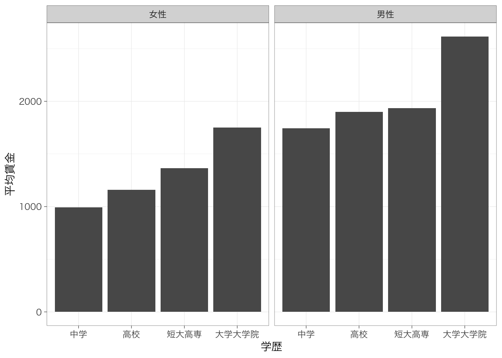

Chapter 6 2変数の集計
以下の記述はすでにtidyverseパッケージを読み込んでおり、また読み込んだデータをpiaacというデータフレームに入れていることを前提とします。データフレームの名前はpiaacである必要はありません。以下のようなコードを実行しています。
library(tidyverse)piaac <- read_rds("data/piaac_sample.rds")また、Macでggplot2パッケージを使用し、グラフ中に日本語を使用する場合には、library(tidyverse)またはlibrary(ggplot2)を実行したうえで、たとえば以下のようなコードをあらかじめ実行しておく必要があります。
theme_set(theme_grey(base_family = "HiraginoSans-W3"))この資料で使用しているグラフについては以下のようにthemeを設定しています。
theme_set(theme_bw(
base_family = "HiraginoSans-W3",
base_size = 11,
base_rect_size = 0.2,
base_line_size = 0.2
))Windowsユーザの方は上記コードからbase_family =の行を除いたこちらのコードで同じような雰囲気になります：
theme_set(theme_bw(
base_size = 11,
base_rect_size = 0.2,
base_line_size = 0.2
))6.1 平均値の比較
6.1.1 基本
カテゴリ変数の値ごとに連続変数の値を比較したい。たとえば性別ごとに賃金の値を比較したいとする。このようなときには、平均値の比較を行う。
piaac %>%
group_by(gender) %>% # genderの値ごとに集計すると宣言
summarize(mean = mean(wage))## # A tibble: 2 × 2
## gender mean
## <fct> <dbl>
## 1 女性 1332.
## 2 男性 2187.どちらもNAになってしまった。集計する変数（この場合はwage）にNAが含まれている場合には、平均値が計算できず、NAとなってしまう。NAを除いて平均値を計算するときには、あらかじめwageがNAの行を除外しておくとよい。
piaac %>%
filter(is.na(wage) == FALSE) %>% # is.na(wage)で、wageの値がNAならTRUE, NAでないならFALSEを返す
group_by(gender) %>%
summarize(mean = mean(wage))## # A tibble: 2 × 2
## gender mean
## <fct> <dbl>
## 1 女性 1332.
## 2 男性 2187.平均値だけでなく、標準偏差と各カテゴリの人数をチェックしておくとよいだろう。
piaac %>%
filter(is.na(wage) == FALSE) %>%
group_by(gender) %>%
summarize(mean = mean(wage),
sd = sd(wage),
n = n()) # n()で行の数を計算## # A tibble: 2 × 4
## gender mean sd n
## <fct> <dbl> <dbl> <int>
## 1 女性 1332. 775. 1318
## 2 男性 2187. 1323. 14726.1.2 棒グラフによる可視化
平均値の違いを視覚的にみたいときには、棒グラフを作るのがよい。先ほどのようにカテゴリごとに平均値を計算したうえで、geom_col()で棒グラフを作ることができる。
piaac %>%
filter(is.na(wage) == FALSE) %>%
group_by(gender) %>%
summarize(mean = mean(wage)) %>%
ggplot(aes(x = gender, y = mean)) +
geom_col() +
labs(x = "性別", y = "平均賃金")
6.1.3 複数カテゴリの組み合わせ
複数のカテゴリ変数を組み合わせて平均値を比較したいということもあるだろう。このような場合も、基本は同じ。group_by()の部分に複数の変数を指定することで、カテゴリを組合わせた集計ができる。
piaac %>%
filter(is.na(wage) == FALSE) %>%
filter(is.na(educ) == FALSE) %>%
group_by(gender, educ) %>%
summarize(mean = mean(wage),
n = n())## `summarise()` has grouped output by 'gender'. You can override using the `.groups` argument.## # A tibble: 8 × 4
## # Groups: gender [2]
## gender educ mean n
## <fct> <fct> <dbl> <int>
## 1 女性 中学 992. 101
## 2 女性 高校 1154. 484
## 3 女性 短大高専 1360. 473
## 4 女性 大学大学院 1743. 260
## 5 男性 中学 1751. 139
## 6 男性 高校 1907. 497
## 7 男性 短大高専 1926. 219
## 8 男性 大学大学院 2603. 617棒グラフを作ることももちろんできる。いくつかのパターンを示しておく。
meandata <- piaac %>%
filter(is.na(wage) == FALSE) %>%
filter(is.na(educ) == FALSE) %>%
group_by(gender, educ) %>%
summarize(mean = mean(wage)) #いったん名前をつけて保存しておく## `summarise()` has grouped output by 'gender'. You can override using the `.groups` argument.学歴で色分けするパターン：
meandata %>%
ggplot(aes(x = gender, y = mean, fill = educ)) +
geom_col(position = "dodge") +
labs(x = "性別", y = "平均賃金")
性別で色分けするパターン：
meandata %>%
ggplot(aes(x = educ, y = mean, fill = gender)) +
geom_col(position = "dodge") +
labs(x = "学歴", y = "平均賃金")
性別でグラフを分割するパターン：
meandata %>%
ggplot(aes(x = educ, y = mean)) +
geom_col() +
labs(x = "学歴", y = "平均賃金") +
facet_wrap(~gender)
6.2 分布の比較
複数のヒストグラムを重ねるときには、geom_histogram()のなかでposition = "identity"と指定する。また、ヒストグラムが重なると片方が見えなくなってしまうので、alpha = 0.5などと指定することで、透明度をつける。alpha = 1がデフォルトで、0に近づくほど透明度が高くなる。
piaac %>%
ggplot(aes(x = wage, fill = gender)) +
geom_histogram(position = "identity", alpha = 0.5) +
labs(fill = "")## `stat_bin()` using `bins = 30`. Pick better value with `binwidth`.
カテゴリごとに人数が異なる場合、少し比較が難しいかもしれない。このような場合は縦軸を度数ではなく密度（density）にするとよい。
piaac %>%
ggplot(aes(x = wage, y = ..density.., fill = gender)) +
geom_histogram(position = "identity", alpha = 0.5) +
labs(fill = "")## `stat_bin()` using `bins = 30`. Pick better value with `binwidth`.
カテゴリの数が2つならいいが、たくさんの場合には見にくくなってしまう。そのような場合にはfacet_wrap()をつかって図を分けるのがよいだろう。
piaac %>%
ggplot(aes(x = wage, y = ..density..)) +
geom_histogram() +
facet_wrap(~occupation)## `stat_bin()` using `bins = 30`. Pick better value with `binwidth`.
6.3 クロス集計
6.3.1 基本
親の学歴によって本人の学歴の分布がどの程度異なるのかを知りたいとする。このようなときには、クロス集計表を作成する。
piaac %>%
with(table(parenteduc, educ))## educ
## parenteduc 中学 高校 短大高専 大学大学院
## 親：初等教育 127 336 125 106
## 親：中等教育 78 464 332 328
## 親：高等教育 21 147 224 438行%を計算することで、より親の学歴ごとの内訳がわかりやすくなる。
piaac %>%
with(table(parenteduc, educ)) %>%
prop.table(margin = 1)## educ
## parenteduc 中学 高校 短大高専 大学大学院
## 親：初等教育 0.18299712 0.48414986 0.18011527 0.15273775
## 親：中等教育 0.06489185 0.38602329 0.27620632 0.27287854
## 親：高等教育 0.02530120 0.17710843 0.26987952 0.52771084親の学歴が高いほど、本人の学歴も高いことがわかる。
6.3.2 きれいなクロス表をつくる - gtsummary::tbl_cross()
とはいえ、このクロス表はあまり見やすいものとはいえない。度数（人数）と行%がいずれも表示され、かつ、周辺度数（行合計と列合計）を表示するグラフは作れないだろうか。
このようなときに、gtsummaryパッケージに含まれているgtsummary::tbl_cross()関数が役に立つ。
install.packages("gtsummary") #未インストールの場合はインストール
library(gtsummary)行%を表記する場合は、tbl_cross(data = xx, row = 行にする変数, column = 列にする変数, percent = "row")と書く。
piaac %>%
tbl_cross(parenteduc, educ, percent = "row")| Characteristic | educ | Total | |||
|---|---|---|---|---|---|
| 中学 | 高校 | 短大高専 | 大学大学院 | ||
| parenteduc | |||||
| 親：初等教育 | 127 (18%) | 336 (48%) | 125 (18%) | 106 (15%) | 694 (100%) |
| 親：中等教育 | 78 (6.5%) | 464 (39%) | 332 (28%) | 328 (27%) | 1,202 (100%) |
| 親：高等教育 | 21 (2.5%) | 147 (18%) | 224 (27%) | 438 (53%) | 830 (100%) |
| Unknown | 14 (22%) | 34 (53%) | 11 (17%) | 5 (7.8%) | 64 (100%) |
| Total | 240 (8.6%) | 981 (35%) | 692 (25%) | 877 (31%) | 2,790 (100%) |
値が度数、括弧内が行%を意味している。with(table())のときと違って、NAのデータは自動的に除外されず、「Unknown」という行や列が追加される。NAのデータを除外したいときには、以下のようにする。
piaac %>%
tbl_cross(parenteduc, educ, percent = "row", missing = "no")## FALSE observations with missing data have been removed.| Characteristic | educ | Total | |||
|---|---|---|---|---|---|
| 中学 | 高校 | 短大高専 | 大学大学院 | ||
| parenteduc | |||||
| 親：初等教育 | 127 (18%) | 336 (48%) | 125 (18%) | 106 (15%) | 694 (100%) |
| 親：中等教育 | 78 (6.5%) | 464 (39%) | 332 (28%) | 328 (27%) | 1,202 (100%) |
| 親：高等教育 | 21 (2.5%) | 147 (18%) | 224 (27%) | 438 (53%) | 830 (100%) |
| Total | 226 (8.3%) | 947 (35%) | 681 (25%) | 872 (32%) | 2,726 (100%) |
6.4 クロス集計表を図示する
クロス集計は数値が多いので、図で表されているとわかりやすいかもしれない。このようなときには、with(table())で作成した数値をデータフレームとすることで、比較的簡単に図をつくることができる。
table <- piaac %>%
with(table(parenteduc, educ)) %>%
prop.table(margin = 1) %>%
as.data.frame() # データフレーム形式に変換
table #中身を確認。## parenteduc educ Freq
## 1 親：初等教育 中学 0.18299712
## 2 親：中等教育 中学 0.06489185
## 3 親：高等教育 中学 0.02530120
## 4 親：初等教育 高校 0.48414986
## 5 親：中等教育 高校 0.38602329
## 6 親：高等教育 高校 0.17710843
## 7 親：初等教育 短大高専 0.18011527
## 8 親：中等教育 短大高専 0.27620632
## 9 親：高等教育 短大高専 0.26987952
## 10 親：初等教育 大学大学院 0.15273775
## 11 親：中等教育 大学大学院 0.27287854
## 12 親：高等教育 大学大学院 0.52771084table %>%
ggplot(aes(y = Freq, x = parenteduc, fill = educ)) +
geom_col() +
labs(x = "", y = "割合", fill = "本人学歴")
積み上げ棒グラフは各カテゴリの大きさがわかりにくいので、ばらして始点をそろえるほうが見やすいかもしれない。
table %>%
ggplot(aes(y = Freq, x = parenteduc, fill = educ)) +
geom_col(position = "dodge") +
labs(x = "", y = "割合", fill = "本人学歴") +
theme(legend.position = "bottom")
6.5 散布図
6.5.1 散布図をみる
連続変数どうしの関係をみたいときには、散布図を使う。散布図を書くときには、geom_point()を使う。サンプルサイズが大きい場合には点がかぶってしまうので、かぶっている箇所がわかりやすいよう、透明度を指定するか、点の形状を変えると良い。shape = 1というオプションをつけると、白抜きの点にできる。
piaac %>%
ggplot(aes(x = age, y = wage)) +
geom_point(shape = 1)
散布図の傾向を表すような直線を引くと、関係がよりわかりやすいだろう。
piaac %>%
ggplot(aes(x = age, y = wage)) +
geom_point(shape = 1) +
geom_smooth(method = "lm", se = FALSE)## `geom_smooth()` using formula 'y ~ x'
geom_smooth()というのは、2つの変数の関連の傾向を示す線を描く関数。カッコ内で、どのような線を引くのかを指定する。
method = "lm"という部分は、回帰分析により推定される直線を引くという指定を表している。何も書かない場合には、method = "loess"（局所回帰）による線が描かれる。se = FALSEの部分では、係数の標準誤差から計算される95%信頼区間を書かないという指定を表している。何も書かない場合には、信頼区間がプロットされる。
6.5.2 カテゴリごとに散布図を分ける
たとえば男性と女性で別々に散布図を書きたいということがあるだろう。このような場合には、facet_wrap()を使うか、color =を指定する。
piaac %>%
ggplot(aes(x = age, y = wage)) +
geom_point(shape = 1) +
geom_smooth(method = "lm", se = FALSE) +
facet_wrap(~gender)## `geom_smooth()` using formula 'y ~ x'
piaac %>%
ggplot(aes(x = age, y = wage, color = gender)) +
geom_point(shape = 1) +
geom_smooth(method = "lm", se = FALSE) ## `geom_smooth()` using formula 'y ~ x'
6.5.3 相関係数
相関係数は以下のように定義される：
\[ r = \frac{\textrm{Cov}(x, y)}{\textrm{Sd}(x)\textrm{Sd}(y)} = \frac{\frac{1}{N} \sum_{i = 1}^N(x_i - \overline{x})(y_i - \overline{y})}{\sqrt{\frac{1}{N} \sum_{i = 1}^N(x_i - \overline{x})^2}\sqrt{\frac{1}{N} \sum_{i = 1}^N(y_i - \overline{y})^2}} \]
相関係数はsummarize()コマンドで計算できる。NAが含まれている場合にはやはり計算結果もNAになってしまうので、前もってNAの行がないかどうかチェックしておく。
piaac %>%
filter(is.na(wage) == FALSE) %>%
summarize(cor = cor(age, wage))## # A tibble: 1 × 1
## cor
## <dbl>
## 1 0.1356.6 値が粗い連続変数を扱う
値が粗い連続変数を扱う場合、散布図があまり可視化の役に立たないことがある。例えば、健康状態について尋ねた質問の選択肢に次のように値を与え、高いほど健康であることを示すようにした変数（health）があるとする。
| 選択肢 | 調査票上の番号 | 数値化例 |
|---|---|---|
| 極めて優れている | 1 | 5 |
| 大変良い | 2 | 4 |
| 良い | 3 | 3 |
| どちらともいえない | 4 | 2 |
| 悪い | 5 | 1 |
年齢が高いほど健康状態が悪くなるというのはよく知られているので、年齢を横軸、健康状態を縦軸にとった散布図を書くと右下に点が集まるはずだと思ったが、散布図を書いてみると、点が重なってしまってなんだかよくわからない散布図になってしまう。
piaac %>%
ggplot(aes(x = age, y = health)) +
geom_point(alpha = 0.2)
このような場合はどうしたらよいだろうか？解決策の1つは、平均値の比較のときのように、横軸の変数の値ごとに健康状態の平均値を計算し、それをプロットすることだ。
piaac %>%
group_by(age) %>%
summarize(mean = mean(health)) %>%
ggplot(aes(x = age, y = mean)) +
geom_point()
ただ、この図では人数が少ない年齢層も多い年齢層も同じ大きさの点で描かれてしまっていることが少し不満かもしれない。点の大きさを考慮したい場合には、バブル・プロットを使う。aestheticsのところでsize =を指定することで、点の大きさを変えることができる。
piaac %>%
group_by(age) %>%
summarize(mean = mean(health),
n = n()) %>%
ggplot(aes(x = age, y = mean, size = n)) +
geom_point(alpha = 0.5)